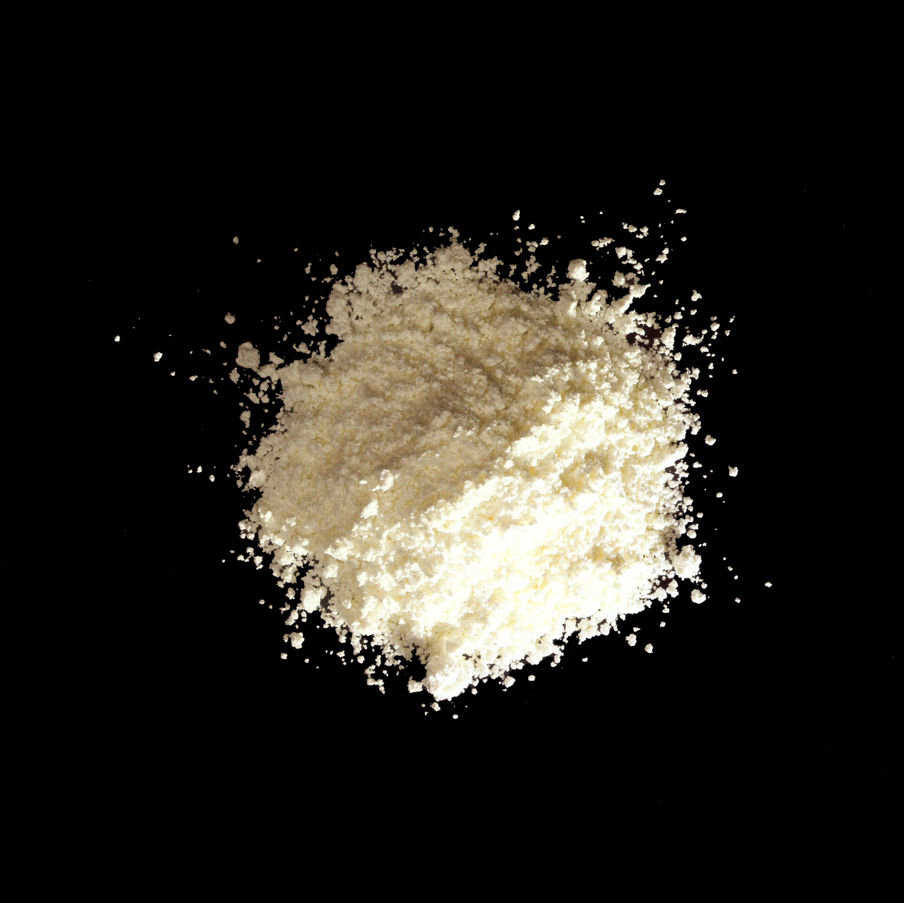

Thiamine mononitrate

532-43-4
Synonyms or siblings
Vitamin B1, Mononitrate de thiamine, Nitrate de Thiamine, Thiamine nitrate, Thiamin
Funtion
Nutrient - Enriching Agent
Description
Thiamine mononitrate, or vitamin B1, was the first vitamin discovered by Christian Eijkman, who found it prevented beriberi in those eating brown rice. It supports energy production and overall health, and is synthesized from petrochemicals for use in enriched flour.
다양한 이름
비타민 B1, 티아민, 비타민B1질산염
기능
영양강화제
설명
티아민질산염은 흰색 결정성 가루로 거의 냄새가 없거나 약간의 특이한 냄새를 가지고 있는 비타민류 강화제이다.티아민질산염은 탄수화물, 단백질, 지방을 우리가 사용가능한 에너지의 형태로 만드는 역할을 한다. 즉 우리 몸의 대사에 중요한 기능을 담당한다고 볼 수 있다. 영양강화를 위해 빵과 간장 등에 이용된다.